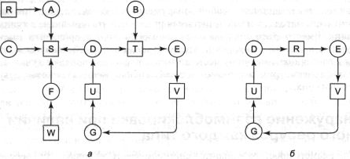
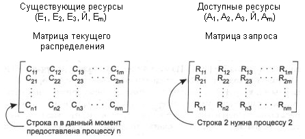
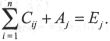
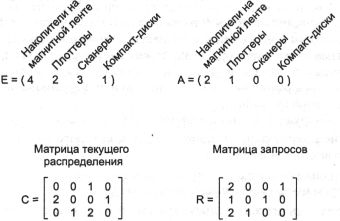

Обнаружение и устранение взаимоблокировок
Вторая техника представляет собой обнаружение и восстановление. При использовании
этого метода система не пытается предотвратить попадание в тупиковые ситуации.
Вместо этого она позволяет взаимоблокировке произойти, старается определить,
когда это случилось, и затем совершает некие действия к возврату системы к состоянию,
имевшему место до того, как система попала в тупик. В этом разделе мы рассмотрим
некоторые из способов обнаружения тупиковых ситуаций и выхода из них.
Обнаружение взаимоблокировки при наличии одного ресурса каждого
типа
Начнем с самого простого варианта: в системе существует только один ресурс каждого
типа. Подобная система могла бы иметь один сканер, одно устройство для записи
компакт-дисков, один плоттер и один накопитель на магнитной ленте, то есть не
более чем по одному представителю каждого класса. Другими словами, мы исключаем
из рассмотрения системы с двумя одновременно подключенными принтерами. Мы обратимся
к ним позже и будем использовать другой метод.
Для такой системы можно сконструировать граф ресурсов вида, продемонстрированного
на рис. 3.3. Если этот граф содержит один или больше циклов, значит, произошла
взаимоблокировка и блокирован любой процесс, являющийся частью цикла. Если в
графе нет циклов, система не попала в тупик.
В качестве примера более сложной системы, чем те, которые мы рассматривали
до сих пор, обсудим систему с семью процессами, обозначенными буквами от А
до G, и шестью ресурсами, обозначенными буквами от R до W.
Состояние системы, то есть то, какой процесс владеет каким ресурсом и какой
ресурс запрашивается процессом в данный момент, соответствует следующему списку:
1. Процесс А занимает ресурс R и хочет получить ресурс S.
2. Процесс В ничего не использует, но хочет получить ресурс
Т.
3. Процесс С ничего не использует, но хочет получить ресурс S.
4. Процесс D занимает ресурс U и хочет получить ресурсы S
и T.
5. Процесс E занимает ресурс Т и хочет получить ресурс V.
6. Процесс F занимает ресурс W и хочет получить ресурс S.
7. Процесс G занимает ресурс V и хочет получить ресурс U.
Вопрос: «Заблокирована ли эта система и если да, то какие процессы
в этом участвуют?»
Чтобы ответить на этот вопрос, мы можем составить граф ресурсов (рис. 3.3,
а). Этот граф содержит один цикл, который виден при визуальном обследовании.
Цикл показан на рис. 3.3, б. Изучая его, можно заметить, что процессы
Д, E и G заблокированы. Процессы А, С и F не попали в тупик, потому
что любому из них можно предоставить ресурс S, после чего процесс, получивший
ресурс, закончит свою работу и вернет ресурс. Затем два других процесса по очереди
могут получить ресурс и также успешно выполнить свою работу.

Рис. 3.3. Граф ресурсов
(а); цикл, извлеченный из а (б)
Несмотря на то что в простом графе относительно легко зрительно различить
взаимоблокировку процессов, для использования такой схемы в настоящей системе
нам необходим формальный алгоритм, выявляющий тупики. Известно множество алгоритмов,
обнаруживающих циклы в направленных графах. Ниже мы рассмотрим простой алгоритм,
который изучает граф и завершается или когда находит цикл, или когда показывает,
что циклов в этом графе не существует. Он использует одну структуру данных —
список узлов L. Во время работы алгоритма на ребрах графа будет ставиться
метка, говорящая о том, что их уже проверили, это делается во избежание повторной
проверки.
Алгоритм работает, осуществляя пять перечисленных ниже шагов.
1. Для каждого узла N в графе выполняются следующие пять шагов,
где N является начальным узлом.
2. Задаем начальные условия: L — пустой список, все ребра не маркированы.
3. Текущий узел добавляем в конец списка L и проверяем количество
появлений узла в списке. Если узел присутствует в двух местах, граф содержит
цикл (записанный в список L) и работа алгоритма завершается.
4. Для заданного узла смотрим, выходит ли из него хотя бы одно немаркированное
ребро. Если да, то переходим к шагу 5, если нет, то переходим к шагу 6.
5. Случайным образом выбираем любое немаркированное исходящее ребро и отмечаем
его. Затем по нему переходим к новому текущему узлу и возвращаемся к шагу 3.
6. Теперь мы зашли в тупик. Удаляем последний узел из списка и возвращаемся
к предыдущему узлу, то есть тому, который был текущим перед тупиковым узлом.
Обозначаем его текущим узлом и возвращаемся к шагу 3. Если это первоначальный
узел, граф не содержит циклов и алгоритм завершается.
Этот алгоритм по очереди берет каждый узел в качестве корня того, что, как
он надеется, окажется деревом, и выполняет в дереве поиск в глубину. Если в
процессе обхода алгоритм возвращается к уже встречавшемуся узлу, то он нашел
цикл. Если алгоритм обходит все ребра из какого-нибудь заданного узла, то он
возвращается к предыдущему узлу. Если он возвращается к корню и не может идти
дальше, то подграф текущего узла не содержит циклов. Если данное свойство сохраняется
для всех узлов, значит, полный граф не содержит циклов, а система не заблокирована.
Чтобы увидеть, как работает описанный алгоритм на практике, воспользуемся
графом на рис. 3.3, а. Порядок обработки узлов произвольный, поэтому
будем исследовать их слева направо и сверху вниз. Тогда алгоритм начнет поиск
с узла R, затем последовательно с узлов А, В, С, S, D, Т, Е, F
и т. д. Если мы натолкнемся на цикл, алгоритм остановится.
Мы начинаем с узла R и инициализируем L как пустой список.
Затем добавляем узел R в список, переходим к единственно возможному узлу
А, и его также добавляем к списку L, получая L = [R,
А]. Из узла А следуем к узлу S, получая L = [R,
A, S]. Узел S не имеет исходящих ребер, следовательно, это тупик,
который заставляет нас вернуться к узлу А. Так как у узла А тоже
нет немаркированных исходящих ребер, мы возвращаемся к узлу R, завершая,
таким образом, его исследование.
Теперь снова начнем поиск, стартуя с узла А и предварительно вернув
список L в исходное состояние. Эта часть алгоритма тоже быстро остановится,
поэтому выполним процесс заново, начиная с узла В. Из узла В алгоритм
будет следовать исходящим ребрам до тех пор, пока не достигнет узла D;
в это время список будет
таким: L = [В, Т, Е, V, G, U, D]. Теперь мы должны сделать (случайный)
выбор. Если выбрать узел 5, мы попадаем в тупик и возвращаемся к узлу D.
Во второй раз выбираем узел Т и получаем измененный список L =
[В, Т, Е, V, G, U, D, Т]; в этот момент мы обнаруживаем цикл и останавливаем
алгоритм.
Этот алгоритм далек от оптимального. Лучшая схема описана в [112]. Тем не
менее он демонстрирует существование алгоритма для обнаружения взаимоблокировок.
Обнаружение взаимоблокировок при наличии нескольких ресурсов
каждого типа
Когда в системе существует несколько экземпляров некоторых из ресурсов, для
обнаружения взаимоблокировок необходим другой метод. Сейчас мы расскажем об
основанном на матрицах алгоритме, обнаруживающем тупики среди п процессов,
от Р1 до Рn. Пусть т — это
число классов ресурсов, причем в системе E1, ресурсов класса 1, Е2
ресурсов класса 2 и, в общем, Ei, ресурсов класса i
(где 1 <=i<= т). Е — это вектор существующих ресурсов.
Он передает общее количество имеющихся в наличии экземпляров каждого ресурса.
Например, если класс 1 представляет собой накопители на магнитных лентах, то
E1 = 2 означает, что в системе есть два магнитофона.
В любой момент времени некоторые из ресурсов могут оказаться занятыми и,
соответственно, недоступны. Пусть А будет вектором доступных ресурсов,
где Ai равно количеству экземпляров ресурса i, доступных
в текущий момент (то есть не использующихся). Если оба накопителя на магнитной
ленте заняты, A1 будет равно 0.
Теперь нам нужны два массива: С — матрица текущего распределения
и R — матрица запросов, i-я строка в матрице С говорит
о том, сколько представителей каждого класса ресурсов в данный момент использует
процесс Рi. Таким образом, Сij — это количество
экземпляров ресурса j, которое занимает процесс i. Аналогично,
Rij — это количество экземпляров ресурса j, которые
хочет получить процесс Рi. Эти четыре структуры показаны на
рис. 3.4.

Рис. 3.4. Четыре структуры данных, необходимые для
алгоритма обнаружения тупиков
Для этих четырех структур данных существует важный инвариант. В принципе
каждый ресурс или занят, или свободен. Это наблюдение означает, что

Другими словами, если сложить все экземпляры ресурса j, предоставленные
процессам и доступные в данный момент, то в результате мы получим существующее
в системе количество экземпляров этого класса ресурсов.
Алгоритм обнаружения взаимоблокировок основан на сравнении векторов. Определим,
что для двух векторов А и В отношение А <= В означает,
что каждый элемент вектора А меньше или равен соответствующему элементу
вектора В. Математически это запишется так: А <= В тогда и
только тогда, когда Аi <= Вi для 1 <= i
<= т.
Пусть в исходном положении все процессы не маркированы. По мере продвижения
алгоритма на процессы будет ставиться отметка, служащая признаком того, что
они могут закончить свою работу и, следовательно, не находятся в тупике. После
завершения алгоритма известно, что любой немаркированный процесс находится в
тупиковой ситуации.
Алгоритм обнаружения тупиков состоит из следующих шагов:
1. Ищем немаркированный процесс Рi, для которого i-я
строка матрицы R меньше вектора А или равна ему.
2. Если такой процесс найден, прибавляем i-ю строку матрицы С к
вектору А, маркируем процесс и возвращаемся к шагу 1.
3. Если таких процессов не существует, работа алгоритма заканчивается.
Завершение алгоритма означает, что все немаркированные процессы, если такие
есть, попали в тупик.
На первом шаге алгоритм ищет процесс, который может доработать до конца.
Такой процесс характеризуется тем, что все требуемые для него ресурсы должны
находиться среди доступных в данный момент ресурсов. Тогда выбранный процесс
проработает до своего завершения и после этого вернет ресурсы, которые он занимал,
в общий фонд доступных ресурсов. Затем процесс маркируется как законченный.
Если окажется, что все процессы могут работать, тогда ни один из них в данный
момент не заблокирован. Если некоторые из них никогда не смогут запуститься,
значит, они попали в тупик. Несмотря на то что алгоритм не является детерминированным
(поскольку он может просматривать процессы в любом допустимом порядке), результат
всегда одинаков.
Для иллюстрации работы алгоритма обнаружения тупиков рассмотрим рис. 3.5.
Здесь у нас есть три процесса и четыре класса ресурсов, которые мы произвольно
назвали так: накопители на магнитной ленте, плоттеры, сканеры и устройство для
чтения компакт-дисков. Процесс 1 использует один сканер. Процесс 2 занял два
накопителя на магнитной ленте и устройство для чтения компакт-дисков. Процесс
3 занимает плоттер и два сканера. Каждый процесс нуждается в дополнительном
устройстве, как показывает матрица R.
Работая с алгоритмом обнаружения взаимоблокировок, мы ищем процесс, чей запрос
ресурсов может быть удовлетворен в данной системе. Требования первого процесса
нельзя выполнить, потому что в системе нет доступного устройства для чтения
компакт-дисков. Второй запрос также нельзя удовлетворить, так как нет
свободных сканеров. К счастью, третий процесс может получить все желаемое,
следовательно, он работает, завершается и возвращает все свои ресурсы, давая:
А = (2 2 2 0).
С этого момента может выполняться процесс 2, по окончании возвращая свои
ресурсы в систему. Мы получим:
А = (4 2 2 1).
Теперь может работать оставшийся процесс. В этой системе не возникает взаимоблокировки.

Рис. 3.5. Пример использования алгоритма обнаружения
тупиков
Теперь обсудим немного измененный вариант ситуации на рис. 3.5. Предположим,
что процесс 3, кроме двух накопителей на магнитной ленте и плоттера, нуждается
также и в устройстве для чтения компакт-дисков. Тогда ни один из запросов не
может быть удовлетворен, значит, вся система находится в тупике.
Мы уже знаем, как обнаружить взаимоблокировки, и появляется вопрос: когда
нужно искать их возникновение. Можно проверять систему каждый раз, когда запрашивается
очередной ресурс. Это, конечно, позволит обнаружить тупик максимально рано (насколько
это возможно), но такая операция может оказаться дорогой в смысле времени загрузки
процессора. Альтернативный подход: проверять систему каждые k минут,
или, может быть, только когда степень занятости процессора меньше некоторого
граничного значения. Учет загрузки процессора имеет смысл, потому что при достаточно
большом количестве заблокированных процессов работоспособных процессов в системе
останется немного, и процессор часто будет незанятым.
Выход из взаимоблокировки
Предположим, что наш алгоритм обнаружения взаимоблокировок закончился успешно
и нашел тупик. Что дальше? Необходимы методы для восстановления и получения
в итоге снова работающей системы. В этом разделе мы обсудим различные способы
ликвидации взаимоблокировок. Однако ни один из них не является особо заманчивым.
Восстановление при помощи принудительной выгрузки ресурса
Иногда можно временно отобрать ресурс у его текущего владельца и отдать его
другому процессу. Во многих случаях требуется ручное вмешательство, особенно
в операционных системах пакетной обработки, работающих на мэйнфреймах.
Например, чтобы забрать лазерный принтер у использующего его процесса, оператор
может взять все уже напечатанные листы и сложить их в стопку, соблюдая последовательность
их появления из принтера. Затем процесс можно приостановить (пометить как неработоспособный).
В этот момент принтер можно предоставить другому процессу. Когда он закончит
работу, можно сложить стопку напечатанных листов обратно на выходной поднос
принтера и возобновить первоначальный процесс.
Способность забирать ресурс у процесса, отдавать его другому процессу и затем
возвращать назад так, что исходный процесс этого не замечает, в значительной
мере зависит от свойств ресурса. Выйти из тупика таким образом зачастую трудно
или невозможно. Выбор приостанавливаемого процесса главным образом зависит от
того, какой процесс владеет ресурсами, которые легко могут быть у него отняты.
Восстановление через откат
Если разработчики системы и машинные операторы знают о том, что есть вероятность
появления взаимоблокировок, они могут организовать работу таким образом, чтобы
процессы периодически создавали контрольные точки. Создание процессом контрольной
точки означает, что состояние процесса записывается в файл, в результате чего
впоследствии процесс может быть возобновлен из этого файла. Контрольные точки
содержат не только образ памяти, но и состояние ресурсов, то есть информацию
о том, какие ресурсы в данный момент предоставлены процессу. Для большей эффективности
новая контрольная точка должна записываться не поверх старой, а в новый файл,
так что во время выполнения процесса образуется целая последовательность контрольных
точек.
Когда взаимоблокировка обнаружена, достаточно просто понять, какие ресурсы
нужны процессам. Чтобы выйти из тупика, процесс, занимающий необходимый ресурс,
откатывается к тому моменту времени, перед которым он получил данный ресурс,
для чего запускается одна из его контрольных точек. Вся работа, выполненная
после этой контрольной копии, теряется (например, выходные данные, напечатанные
позднее контрольной копии, отбрасываются и позже печатаются заново). В результате
процесс вновь запускается с более раннего момента, когда он не занимал тот ресурс,
который теперь предоставляется одному из процессов, попавших в тупик. Если возобновленный
процесс снова пытается получить данный ресурс, ему придется ждать того момента,
когда ресурс опять станет доступен.
Восстановление путем уничтожения процессов
Грубейший, но одновременно и простейший способ выхода из ситуации взаимоблокировки
заключается в уничтожении одного или нескольких процессов. Можно уничтожить
процесс, находящийся в цикле взаимоблокировки. При небольшом везении другие
процессы смогут продолжить работу. Если первое удаление не помогает, процедуру
можно повторять до тех пор, пока цикл наконец не будет разорван.
Можно, наоборот, в качестве жертвы выбрать процесс, не находящийся в цикле,
чтобы он освободил свои ресурсы. При этом подходе уничтожаемый процесс выбирается
с особой тщательностью, потому что он должен занимать ресурсы, которые нужны
некоторым процессам в цикле. Например, один процесс может использовать принтер
и требовать плоттер, другой, наоборот, получил плоттер и запрашивает принтер.
Оба попали в тупик. Третий процесс может удерживать другие принтер и плоттер
и успешно работать. Уничтожение третьего процесса приведет к освобождению этих
ресурсов и разрушит взаимоблокировку первых двух процессов.
Там, где это возможно, лучше всего уничтожать те процессы, которые можно
запустить с самого начала без всяких болезненных эффектов. Например, процедуру
компиляции всегда можно повторить заново, поскольку она всего лишь читает исходный
файл и создает объектный файл. Если процедуру компиляции уничтожить в процессе
работы, первый ее запуск не повлияет на второй
С другой стороны, процесс, который обновляет базу данных, не всегда можно
успешно выполнить во второй раз. Если процесс прибавляет 1 к какой-нибудь записи
в базе данных, то его запуск, потом уничтожение, затем повторный запуск приведут
к прибавлению к записи 2, что неверно.